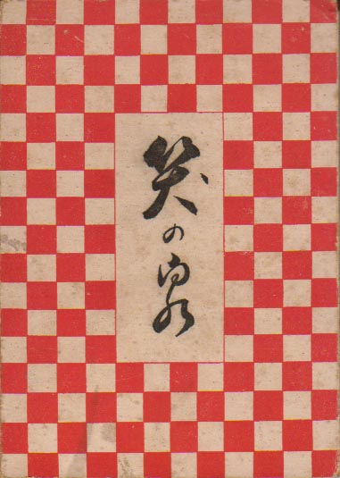

 |
笑の泉 昭和26年 1月30日発行 Ｂ６版 115P 非売品 著者 自 観 発行人 小山正男 発行所 栄光社出版部 |
||
笑い冠沓句集。明烏阿呆名義、奥付では著者「自観」になっている。 |
|||
 |
はしがき 今日本の社会、いな日本人に最も必要なものは、何であるかというと、それは笑いであろう事は、心あるものの等しく唱えるところである。見よ、税金苦、食糧難、住宅難、物価高、金詰り、犯罪激増、病気の氾濫等々、宛然（さながら）地獄図絵といってもいい。又昔から笑う門には福来ると言われる通り、近頃のように湿っぽい陰気なこの娑婆では、好い事など来そうもない。故にこんな陰欝な空気は元気よく笑の爆発で、一遍に吹っ飛ばしてしまう事だ。という訳で、この著を刊行する事になったのである。読者諸君よ、一読大いに笑え！ 三読羽目をはずせ！笑って笑って！ 笑い抜いて！ 天国を造るべきだ。笑いは天国の花というじゃないか。 これは私が二十数年前、冠句の宗匠をしていた頃、笑冠句の会を作り、沢山の集句の中から選んだもので、それを又今度再選し筆を加えたものであるから、いずれの句も珠玉のみといってよかろう。 昭和二十五年十月 編者識 |
||
|
|||